かくれんぼは、言わずもがな、
鬼が隠れた人たちを探すシンプルな遊び。
世界中の子供達に愛されいる理由は、
シンプルな遊びの中で、
隠れる場所を探す時のワクワク感と、
隠れている時や見つかった時のハラハラ感があるからこそ。
そして、子供達にとって、 遊びの中で自然と
相手の視点で考える 初めての機会であるともいえます。
私たちは、幼い時に誰もが
経験したことがある「かくれんぼ」が持つ
「シンプルさ」と「フィジカルさ」と
「ワクワク感」「ハラハラ感」をベースに、
学びの魅力である「相手の視点で考える」体験を
テクノロジーで拡張することで、
多様性を学ぶ機会にアップデートすることを目指しました。
 Global Creative Awards YouFab2019 応募作品
Global Creative Awards YouFab2019 応募作品